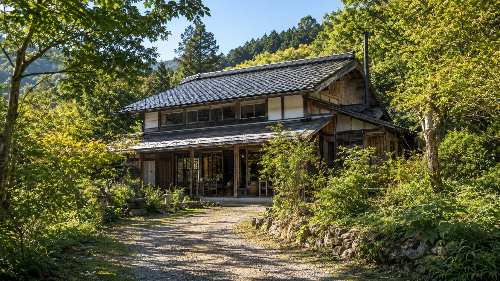
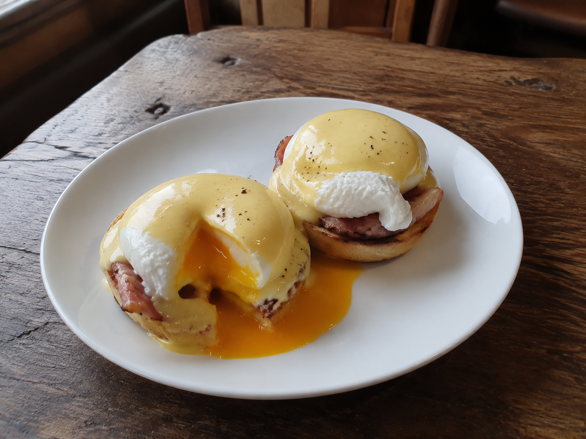

ABOUT
お店について
山のてっぺんにある、小さなたまご屋のはなし。

築80年の家を、少しずつ
もともとは、ここに住んでいたご家族の住まいでした。 空き家になって長かった建物を譲り受け、床を張り替え、 かまどのあった土間をキッチンに変えて、カフェにしました。
柱の傷や、少しゆがんだ引き戸はそのままにしています。 直しすぎないほうが、この家らしいと思ったからです。

たまごは、歩いて5分のところから
使っているのは、山をひとつ下りたところにある養鶏場のたまごです。 その日の朝に届いたものだけを、その日のうちに使いきります。
黄身の色が濃い日も、そうでない日もあります。 季節や飼料で変わるので、それも含めて味わってもらえたらうれしいです。
たいせつにしていること
-
01
朝どれのたまごだけ
前日のたまごは使いません。数に限りがあるため、 売り切れの日はご容赦ください。
-
02
静かな時間を
席数は18席。混みあってもお待ちいただく形にして、 詰め込まないようにしています。
-
03
山にあるものを
レモンや野菜は近くの畑から、コーヒーはとなり町の焙煎所から 分けてもらっています。